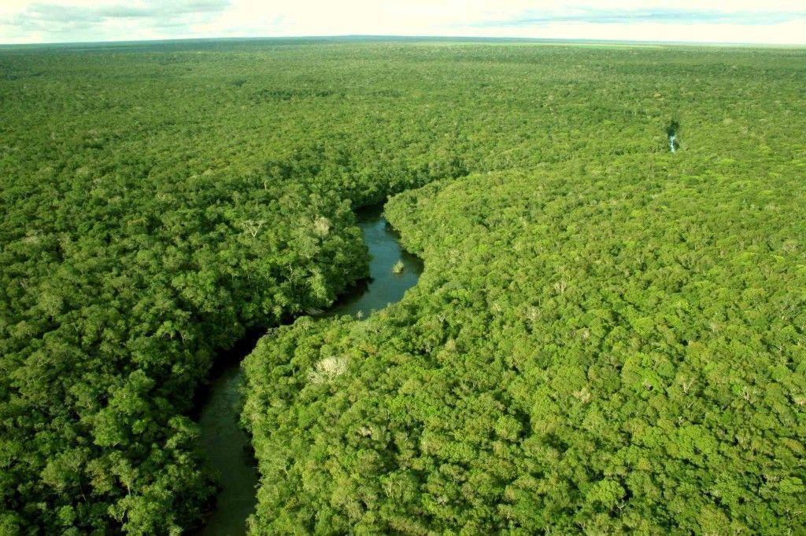

O que é o Domínio Amazônico
O domínio amazônico é uma unidade morfoclimática e paisagística caracterizada por depressões e planícies, clima equatorial quente e úmido, e a maior rede hidrográfica do mundo. Ele é sustentado por densas florestas ombrófilas e solos de baixa fertilidade natural que dependem de uma rápida ciclagem superficial de nutrientes.
Características do Domínio
O domínio amazônico é a maior floresta tropical contínua do mundo, marcada por uma biodiversidade exuberante e pelo clima equatorial quente e altamente chuvoso. A região é cortada pelo Rio Amazonas e sua vasta rede hidrográfica, que abriga o maior volume de água doce do planeta. A vegetação densa se divide em matas de terra firme, várzeas e igapós, sustentada por um solo frágil e arenoso cujos nutrientes são reciclados rapidamente pela própria serapilheira da floresta.


Diferença entre o Domínio Amazônico
e outros domínios brasileiros
O domínio amazônico diferencia-se dos demais pela integração entre depressões e planícies aluviais, clima equatorial permanentemente úmido, a maior bacia hidrográfica do planeta e florestas ombrófilas densas. Ao contrário de domínios com estações secas marcadas ou climas subtropicais, sua vasta rede hídrica e os rios voadores sustentam uma exuberância vegetal que contrasta com solos intemperizados de baixa fertilidade natural e rápida ciclagem de nutrientes.